2013 Holiday Web Page
| Erich and Margie's 2013 Holiday Web Page | 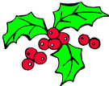 |
December Erich continued to keep Margie company on his sabbatical. On Christmas day, we took Gamble back to the dog beach. He frolicked in the water, and we saw dolphins. We received an unprecedented 11 pounds of cookies, candies, chocolate, and other edible goodies for the holidays. Later that week we traveled south to meet Erin & Tom for lunch, and Lynn for dinner. Erich watched 9 football games in one day. We celebrated new years with the Dunns and Brantons.
January Margie continued her idle lifestyle. Margie saw 3 bears on our property while walking Gamble. Then we both saw them one evening and took pictures. We went canoeing and took these photos. Erich earned his millionth dollar.
February Gamble turned 14 in dog years. We went to Michele's super bowl party. Erich scored 140 points with one word in Scrabble. We celebrated the year of the Snake by playing mah jongg at Barbara's place. We tried pineapple licorice. Erin and Tom drove up for a baseball game and dinner. Gamble had an accident at doggie day care and lost a nail. One of our neighbors drove into our fence. Erich's youngest cousin had a heart attack.
March We enjoyed Bruce Cockburn in concert. Erich received an internet request to view his puzzle collection in person. We hosted a games party. We celebrated Miguel's 60th birthday. We attended Barb's Easter brunch. Erich watched 2 years of Pushing Daisies.
April Margie got older. Margie sprained her ankle. We finally brought home the annual mini-golf tournament trophy. An owl and a skink visited our yard. Erich's best friend in grade school argued a case before the U.S. Supreme Court. We flew to Washington D.C. to visit Erin and Tom. We went to the National Mall most days, toured the Capitol, Library of Congress, Museum of Natural History, the sculpture garden, and the Air & Space Museum, but also spent a day wine tasting, and most evenings drinking Tom's homemade flavored martinis. Erich got wiser.
May Erich found out his puzzles are being used in a high school in Malaysia. Erich got his first e-mail from Belarus. Erich's father Henry and his partner Jerry visited for 4 days. We sorted through the 20 pounds of artwork they brought, toured several galleries, celebrated Henry's 70th birthday, visited the world's largest flea market, had some friends over for dinner, and gained several pounds. Margie spotted a gopher tortoise. Erich gave bridge lessons. Erich got an e-mail from the theme park industry asking him to design interactive puzzles for a new attraction. Erich took a spill during tennis and hurt his shoulder. We opened the Friedman art gallery in our guest room.
June Erich spent the month on muscle relaxants and pain killers. We did trivia night at the Elusive Grape with the Dunns, and won wine and chocolate. We attended a farewell picnic for Michele and Guen. Erich binge-watched 5 years of Breaking Bad. For the first time in 15 years, none of Erich's puzzles were used for the US Puzzle Championship.
July We celebrated the 4th by doing grueling yard work. But the next day we hosted a games party. We took Gamble to the beach. We took Gamble to someone's house for the first time. Erich learned Galois theory. (Mathematicians will be horrified it took him this long. Non-mathematicians would be horrified by Galois theory.) We watched a dozen episodes of Cold Case in one day, thus finishing the series. We played koi koi with Barbara.
August One of Erich's puzzles appeared on the cover of Games magazine. We attended the Ph.D. graduation party of Katie, one of our ex-students. Margie had lunch with a college roommate that she hadn't seen in 37 years. The only dogless house on our street got a dog. Gamble tried to attack a group of wild turkeys in our yard, but got spooked when they flew away. Erich watched 2 years of Nikita. After a plumbing project, we had a pipe in our garage burst and spray water everywhere. On his 825th ebay purchase, Erich paid sales tax for the first time. We went to Steak&Shake for the first time in our adult lives. Erich remembered he taught for a living.
September We lost power for 3 hours one evening, so played cribbage by oil lamp. Erich almost backed his car out of the garage, without bothering to open the garage door. Margie attended a world music concert in New Smyrna Beach with the Dunns. We did an "Ice Cream Walk" to taste 24 ice cream flavors at different businesses downtown. In our back yard Margie saw an armadillo, climbing a tree! We took Gamble to run another lure course. He completed the course faster than last year (12.96 seconds!), but was so tired after 3 laps that he had to be helped into the car. We went to a colloquium by another ex-student. Margie found out that she is no longer allergic, so she got her first tetanus vaccine in 41 years.
October We finally got all the plumbing problems fixed. We enjoyed our living room fish lights. We experimented by adding different liquors to pumpkin cake. The winner: amaretto. We made several visits to IHOP for pumpkin pancakes. We went to Ft. Myers Beach for fall break. We saw less wildlife than usual, being locked out of Ding Darling Wildlife Refuge because of the government shutdown. You can see some pictures of our trip here. When we returned, we discovered our freezer door was ajar. We did trivia night again, and won lots of chocolate truffles. We attended the departmental Je Ne Sais Quoi picnic.
November We celebrated 2 years with Gamble. We got up early to see a partial solar eclipse. Erich was mistakenly given a senior discount at the movies. Margie found a dead possum in a tortoise hole, so she bagged it and took it to the landfill. We made pizza.... and forgot to add cheese. We saw Sam Pacetti perform at the Deland Art Festival. We drove down to Melbourne to visit Erin and Tom for the day. We spent Thanksgiving with Missy and Barbara playing mah jongg and gorging on food.
December Erich watched 21 football games Thanksgiving weekend, and predicted the winners of 16 of them. Margie learned about sink hole inspection because of a change in our insurance. Erich saw a car with thousands of keys glued to it. Erich played tennis in 48 degree weather. Idiot. We hosted our annual solstice party, and had a mighty tasty pot luck dinner. We also broke our record for the most people in our house at one time.
This year we said goodbye to some of our favorite TV shows: The Big C, Body of Proof, Burn Notice, Clone Wars, Dexter, Emily Owens MD, Fairly Legal, Futurama, Golden Boy, Hoarders, Intervention, Ironside, King & Maxwell, Leverage, Monday Mornings, Nikita, The Office, and Private Practice.
Erich's holiday puzzles can be found here. And you can see our archive of previous holiday web pages here.
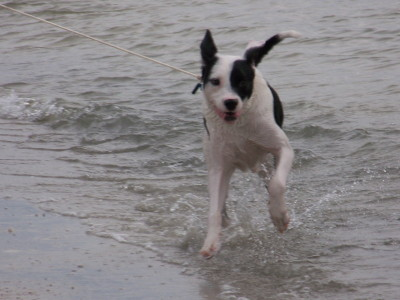 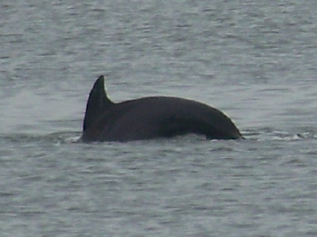 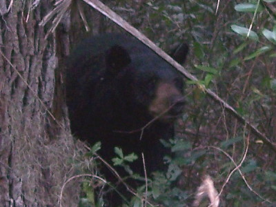 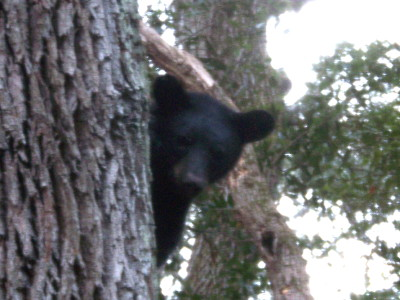 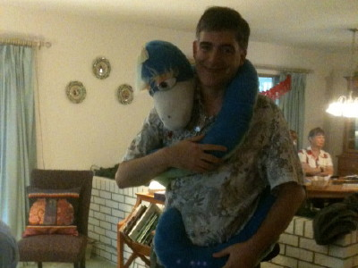 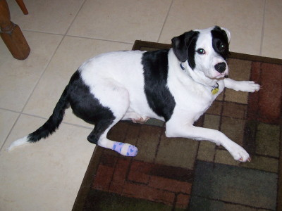 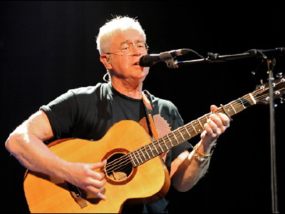 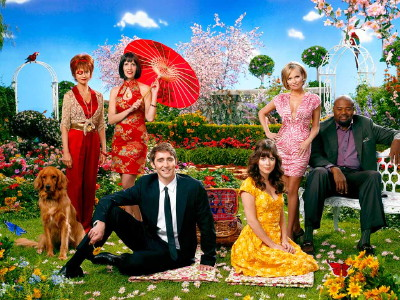 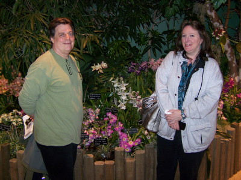 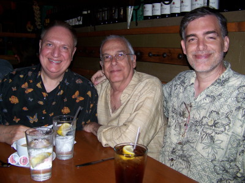 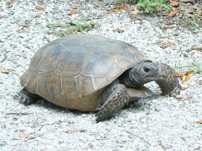 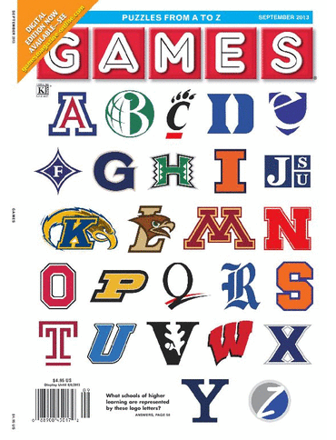 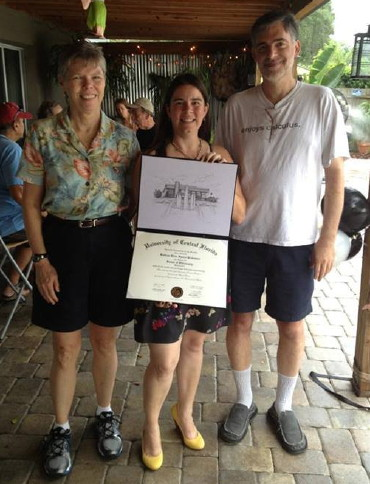 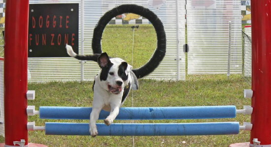 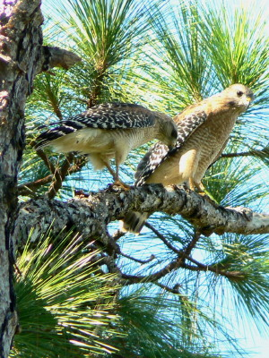 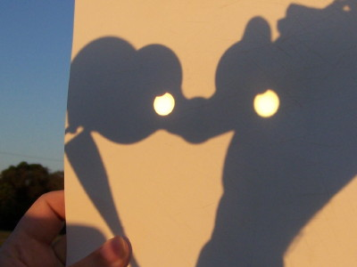 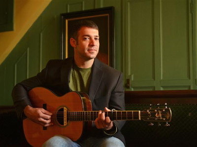
| 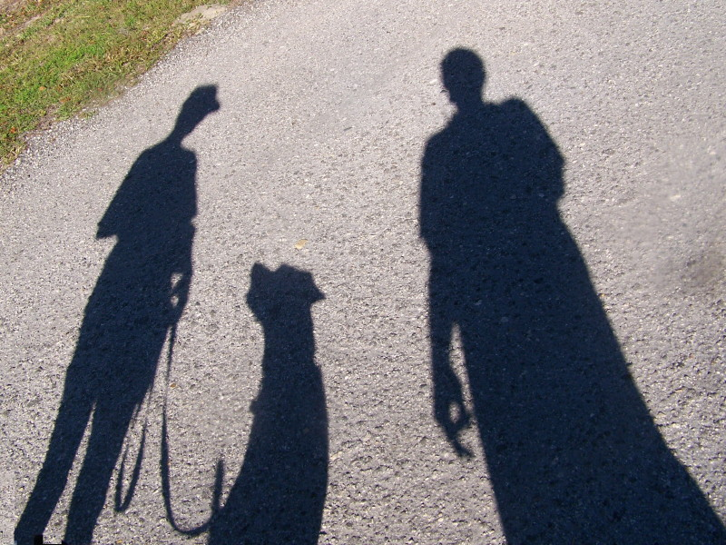 |